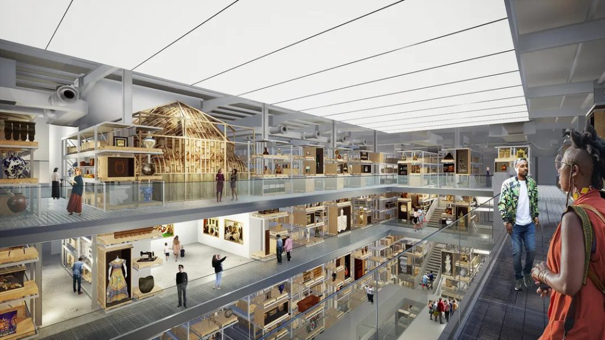
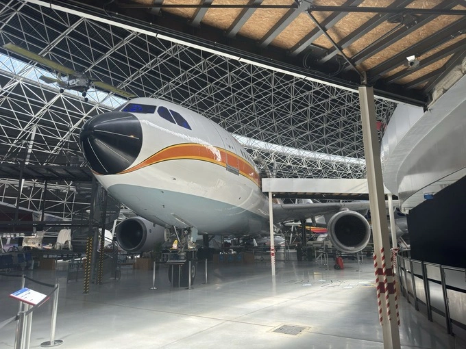
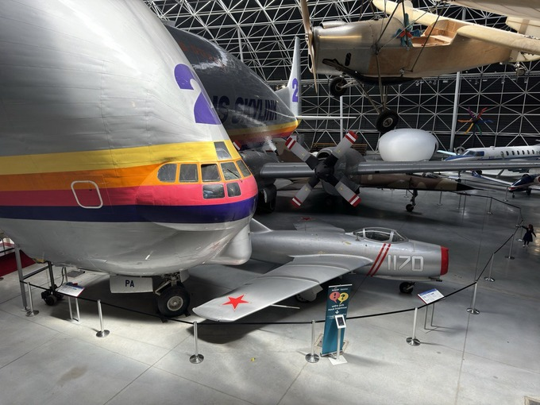
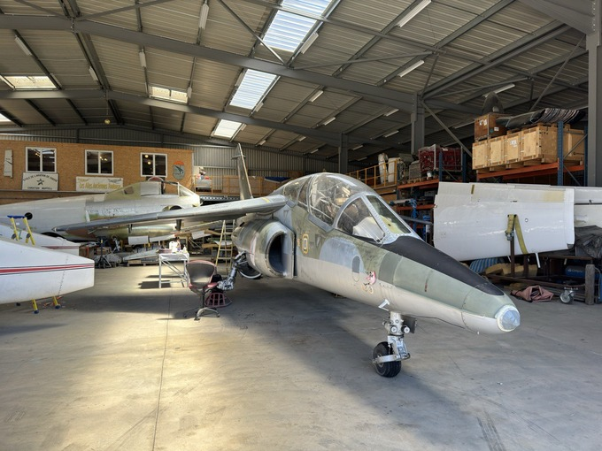
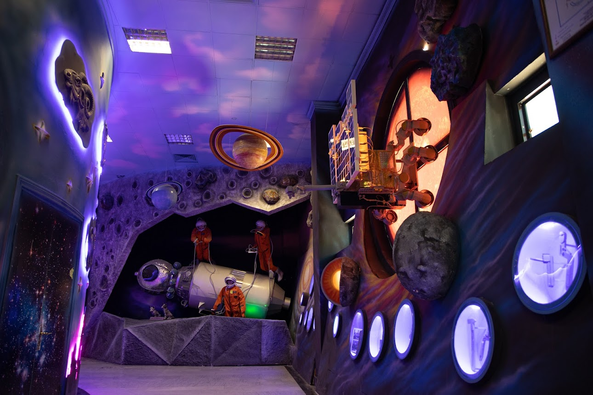
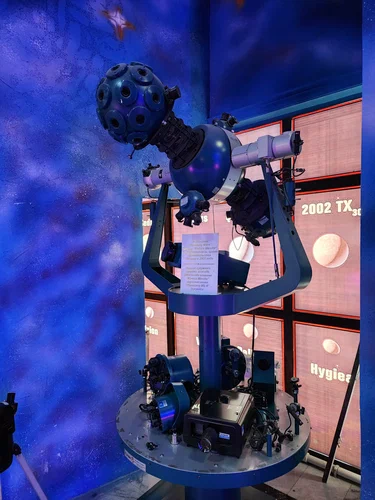
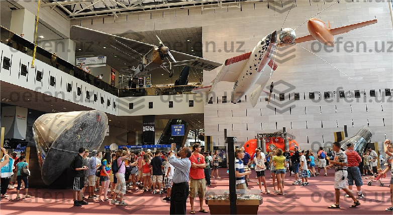

Milliy havo va kosmos muzeyi

Milliy havo va kosmos muzeyi (inglizcha National Air and Space Museum) — dunyodagi eng mashhur ilmiy-texnik muzeylardan biri bo‘lib, u AQSh poytaxti Vashington shahrida joylashgan. Ushbu muzey Smitson instituti tarkibiga kiradi va insoniyatning uchish, aviatsiya hamda kosmosni tadqiq etish tarixiga bag‘ishlangan. Muzey nafaqat samolyotlar va kosmik apparatlar ko‘rgazmasi, balki ilm-fan, muhandislik va inson tafakkurining cheksiz imkoniyatlarini namoyish etuvchi yirik madaniy markazdir. Har yili millionlab tashrif buyuruvchilar bu yerga kelib, osmon va koinot sirlari bilan yaqindan tanishadilar.
Muzeyning tashkil topishi

Milliy havo va kosmos muzeyi 1946-yilda tashkil etilgan, ammo hozirgi mashhur bino 1976-yilda ommaga ochilgan. Muzey AQSh mustaqilligining 200 yilligi munosabati bilan rasman faoliyat boshlagan. Dastlab muzey aviatsiya tarixiga oid buyumlarni yig‘ish maqsadida tashkil etilgan bo‘lsa, keyinchalik kosmik texnologiyalar rivojlanishi bilan muzey tarkibi kengaydi va koinot tadqiqotlariga oid eksponatlar ham qo‘shildi. Bugungi kunda muzey dunyodagi eng yirik aviatsiya va kosmos kolleksiyasiga ega.
Muzey binosi va me’morchiligi
Muzey binosi zamonaviy va keng bo‘lib, katta shisha devorlar, ochiq zallar va baland shiftlar bilan ajralib turadi. Bu arxitektura yirik samolyotlar, raketalar va kosmik apparatlarni to‘liq ko‘rsatish imkonini beradi. Ichki makon juda keng va yorug‘ bo‘lib, tashrif buyuruvchilar eksponatlarni turli burchaklardan ko‘rishlari mumkin. Muzeyda maxsus interaktiv zonalar, kinoteatrlar va simulyatorlar ham mavjud.
Aviatsiya tarixi bo‘limi
Muzeyning eng muhim bo‘limlaridan biri — aviatsiya tarixi bo‘limidir. Bu yerda insoniyatning parvoz haqidagi orzulari qanday amalga oshgani bosqichma-bosqich ko‘rsatiladi. Bu bo‘limda:
- Ilk parvoz qurilmalari
- XX asr boshidagi samolyotlar
- Harbiy va fuqarolik aviatsiyasi namunalari
namoyish etiladi. Eng mashhur eksponatlardan biri — Rayt aka-ukalarning 1903-yilda parvoz qilgan samolyotidir. Bu samolyot insoniyat tarixidagi birinchi muvaffaqiyatli boshqariladigan parvoz ramzi hisoblanadi.
Harbiy aviatsiya va texnologiyalar
Muzeyda harbiy aviatsiyaga bag‘ishlangan alohida bo‘lim ham mavjud. Bu yerda:
- Birinchi va Ikkinchi jahon urushi samolyotlari
- Reaktiv qiruvchi samolyotlar
- Harbiy texnologiyalarning rivoji
ko‘rsatiladi. Bu bo‘lim texnologiya va tarix o‘rtasidagi bog‘liqlikni ochib beradi hamda urushlar aviatsiya rivojiga qanday ta’sir qilganini tushuntiradi.
Kosmos bo‘limi: Yer chegarasidan tashqarida
Milliy havo va kosmos muzeyining eng qiziqarli va mashhur qismi — kosmos bo‘limidir. Bu yerda insoniyatning koinot sari qilgan ilk qadamlaridan tortib, zamonaviy kosmik tadqiqotlargacha bo‘lgan jarayon yoritiladi. Bu bo‘limda:
- Sun’iy yo‘ldoshlar
- Raketa dvigatellari
- Kosmik kapsulalar
namoyish etiladi. Eng mashhur eksponatlardan biri — “Apollo 11” kosmik kemasi bo‘lib, aynan shu missiya orqali inson ilk bor Oyga qadam qo‘ygan.
Astronavtlar va kosmik parvozlar
Muzeyda astronavtlarning hayoti va faoliyatiga bag‘ishlangan maxsus ekspozitsiyalar mavjud. Bu yerda:
- Astronavtlar kiyimlari
- Kosmosda ishlatilgan asboblar
- Hayotiy ta’minot tizimlari
ko‘rsatiladi. Bu bo‘lim kosmik parvozlarning naqadar murakkab va xavfli ekanini, shu bilan birga inson jasorati va ilm-fanning kuchini yaqqol namoyon etadi.
Ilmiy tushuntirish va interaktiv ko‘rgazmalar
Milliy havo va kosmos muzeyi faqat tomosha qilish uchun emas, balki o‘rganish va tajriba qilish uchun ham mo‘ljallangan. Muzeyda:
- Parvoz simulyatorlari
- Interaktiv ekranlar
- Fizika va aerodinamika tajribalari
mavjud. Bu ayniqsa o‘quvchilar va yoshlar uchun juda foydali bo‘lib, ilm-fanga bo‘lgan qiziqishni oshiradi.
Planetariy va IMAX kinoteatri

Muzey tarkibida planetariy va IMAX kinoteatri faoliyat yuritadi. Planetariyda yulduzlar, sayyoralar va galaktikalar haqidagi ilmiy namoyishlar o‘tkaziladi. IMAX kinoteatrida esa kosmos, tabiat va ilm-fan mavzusidagi hujjatli filmlar katta ekran orqali namoyish etiladi.Milliy havo va kosmos muzeyi ta’lim sohasida ham muhim rol o‘ynaydi. Bu yerda:
- Ma’ruzalar
- Seminarlar
- Ilmiy dasturlar
o‘tkaziladi. Muzey yosh avlodni muhandislik, astronomiya va fizika fanlariga qiziqtirishni maqsad qilgan.
Zamonaviy tadqiqotlar va kelajak
Muzey doimiy ravishda yangilanib boradi. Zamonaviy kosmik dasturlar, Mars tadqiqotlari, sun’iy intellekt va kelajak texnologiyalariga oid yangi ko‘rgazmalar qo‘shilmoqda. Bu muzey faqat o‘tmishni emas, balki kelajakni ham namoyish etadi.
Milliy havo va kosmos muzeyi — bu insoniyatning osmon va koinotni zabt etish yo‘lidagi jasorati, aql-zakovati va ilmiy yutuqlarining yorqin timsolidir. Bu yerga tashrif buyurish insonni orzu qilishga, izlanishga va kelajak sari intilishga undaydi. U dunyodagi eng ilhomlantiruvchi muzeylardan biri hisoblanadi.